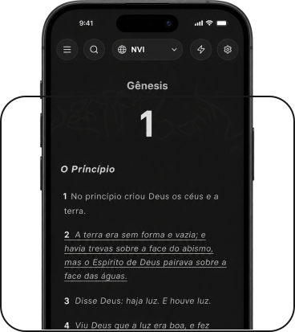

Leitura
Leia em ordem cronológica, explore os textos originais, encontre referências cruzadas e conheça o contexto histórico, mapas.
Tem muito mais para mostrar.
Jetroh te ajuda a enxergar
além do texto...
Leia em ordem cronológica, explore os textos originais, encontre referências cruzadas e conheça o contexto histórico, mapas.

Leituras guiadas, devocionais, estudos e mensagens. O Jetroh te acompanha desde uma dúvida simples até aquilo que você quer estudar e construir com mais atenção.

Anotações e conteúdos compartilhados por cristãos e instituições. Peça oração e ore por outras pessoas.
O Jetroh adapta cada conversa ao seu nível de conhecimento, das primeiras dúvidas aos estudos mais avançados.

Antes de responder, o Jetroh consulta fontes que ajudam a entender o texto sem tirar a Bíblia do centro.

Livros, comentários e materiais cristãos reunidos para ajudar você a se aprofundar no que está estudando.

Os fariseus conheciam as Escrituras, mas não reconheceram Cristo. Não queremos formar intelectuais, mas pessoas que buscam conhecer Jesus com profundidade.

Tornar o estudo da Bíblia mais profundo e acessível, usando a tecnologia para glorificar a Cristo e ajudar mais pessoas a conhecer Aquele que nos amou primeiro e nos deu a vida eterna.
O Jetroh terá recursos acessíveis para leitura e estudo, com detalhes de planos apresentados no lançamento.
O aplicativo respeita tradições e denominações, mantendo a Bíblia no centro da experiência.
Privacidade e segurança fazem parte da estrutura do produto, especialmente em conteúdos e anotações pessoais.
Sim. Por isso as respostas devem ser conferidas nas referências apresentadas. A IA não substitui discipulado, igreja local ou estudo responsável.
Leitura bíblica, ferramentas de estudo, contexto, textos originais, referências, devocionais, biblioteca, comunidade e assistência por IA.
As anotações privadas permanecem privadas; conteúdos comunitários dependem da sua escolha de compartilhamento.
A proposta do Jetroh é usar tecnologia como ferramenta para aprofundar a leitura e compreensão das Escrituras.

Tenha a Bíblia, ferramentas de estudo e conteúdos para se aprofundar na Palavra, tudo em um só lugar.
Acessar